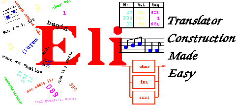

|  | |||
|
Methods and techniques of compiler construction provide an enabling technology for generating software from specifications. They are applicable to a range of problems that is much broader than the development of compilers for programming languages: Processors for input languages, design languages, specification languages, and intermediate languages in applications programs all demand solutions to translation problems.
We have combined a variety of standard tools that implement powerful compiler construction strategies into a domain-specific programming environment called Eli. Using this environment, one can automatically generate complete language implementations from application-oriented specifications. The implementations might be interpretive, using the constructs of the source language to invoke operations of an existing system, or might involve translation into an arbitrary target language.
Eli provides modern compiler construction facilities to users with a wide range of sophistication. It offers complete solutions for commonly-encountered language implementation subtasks and contains libraries of reusable specifications, making possible the production of high-quality implementations from simple problem descriptions.
The system has been in the field since 1989, and has been used in a number of projects worldwide. It generates programs whose performance is comparable to that of a good hand-coded implementation. Development time for a processor using Eli is generally about one third of that for comparable hand code, and maintenance is significantly easier because specifications rather than implementations are being maintained.
Eli has been and is being used successfully in a number of areas to produce translators, program generators, analysers and interpreters. Here is a small selection of applications we have heard about:
Eli is a freely-available system that has many advantages over conventional tool sets for compiler construction.
The user describes the problem that must be solved. Eli automatically employs the tools and components needed for that particular problem. Because of this, it is possible to improve tools and components without invalidating specifications.
Eli offers solutions for most of the tasks that must be carried out to implement a language. They range from structural analysis (solved by tools analogous to LEX and YACC) through analysis of names, types and values, to storage of translation data structures and production of the target text. There is even a declarative specification for the command-line parameterization of the generated programs.
A basic understanding of languages and language structures suffices to begin using Eli. Tutorials with sample problems and solutions, together with extensive on-line documentation and an interactive help system lead the user further if they so desire.
All components of Eli are coordinated with one another in such a way that the interfaces of the generated modules fit together. As a result, Eli generates a complete set of C modules, including a Makefile, to solve the specified problem. Mechanisms are provided to allow users to override standard modules and interfaces if necessary to solve specific problems.
Eli's tools and modules are implemented according to current understanding of the best approaches to solving translation problems. The generated programs are reliable and efficient. Eli is widely used and tested.
In the course of developing a language implementation, the user makes many changes and corrections in the specification. Eli guarantees that the product is always generated from the current specification and that only the generation steps that are actually required are carried out.